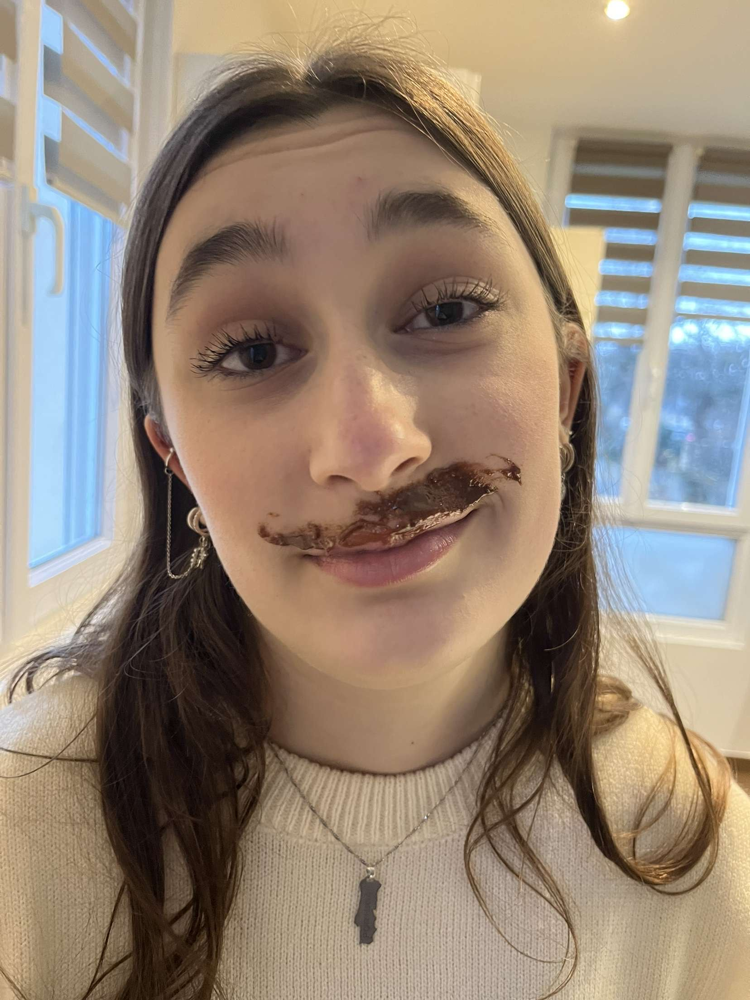

Préchauffer le four à 180°C.Faire fondre le chocolat et le beurre au bain-marie à feu doux Pendant ce temps, séparer les jaunes des blancs d'oeuf. Monter les blancs en neige ferme. Réserver. Quand le mélange chocolat-beurre est bien fondu, ajouter les jaunes d'oeufs et incorporer le sucre et la farine, puis ajouter les blancs d'oeufs sans les casser. Beurrer et fariner un moule à manqué et y verser la pâte à gâteau. Enfourer 20min. Laisser refroidir et tadaaa.